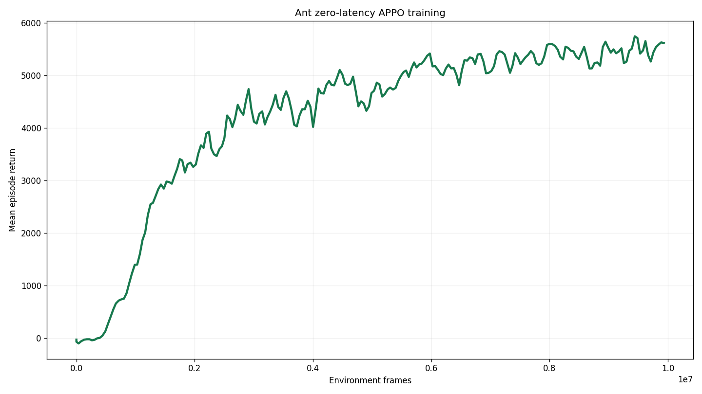
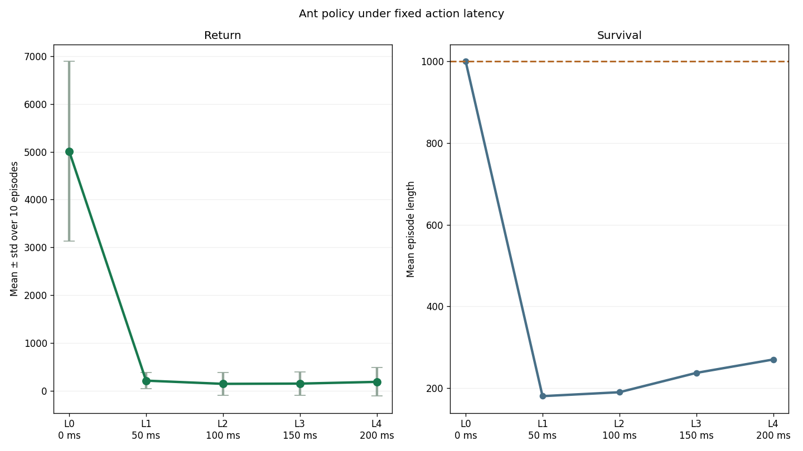
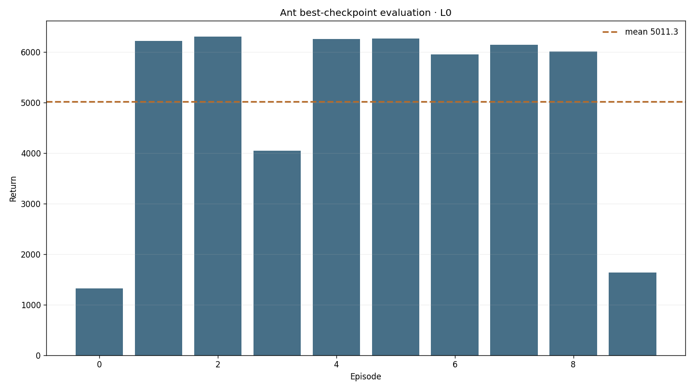

Runtime probe
Gymnasium 0.29.1 and MuJoCo 3.3.7 construct Ant-v4 and render 480×480 RGB through NVIDIA EGL.
latency-sensitive-bench / verified Gymnasium adaptation
A task-owned wrapper preserves Ant-v4's native continuous action space and ordered 27-dimensional state. The zero-latency Sample Factory policy completes the full horizon at L0, then loses locomotion and survival under a single frame of action delay.
01 · Outcome
Gymnasium 0.29.1 and MuJoCo 3.3.7 construct Ant-v4 and render 480×480 RGB through NVIDIA EGL.
AntContinuousActionEnv owns eight-dimensional clipping and exact applied_action recording.
Synchronous Sample Factory APPO completed 10,006,528 zero-latency environment frames.
The best checkpoint completed L0–L4, ten deterministic episodes per latency.
02 · Frozen contract
Ant-v4, Gymnasium 0.29.1, MuJoCo 3.3.7.Box(-inf, inf, (27,), float64).Box(-1, 1, (8,), float32).dt=0.05 s, frame skip 5, model timestep 0.01 s.hold and FIFO ordering.03 · Small-model training
The run uses synchronous APPO, a 64×64 tanh MLP, rollout 64, batch 1024, two epochs, learning rate 0.00295 with linear decay, normalized observations and returns, and no recurrent policy. Eight CPU rollout workers feed one H100 learner/inference process.

PATH=/home/lzj/miniconda3/envs/latency/bin:$PATH \
MUJOCO_GL=egl PYOPENGL_PLATFORM=egl PYTHONPATH=. \
python -m training.train \
--config configs/examples/gymnasium/ant/small_model_train.yamlBest checkpoint: best_000018616_9531392_reward_5710.194.pth. Final checkpoint: checkpoint_000019544_10006528.pth.
04 · Closed-loop latency-bench evaluation



PATH=/home/lzj/miniconda3/envs/latency/bin:$PATH \
MUJOCO_GL=egl PYOPENGL_PLATFORM=egl PYTHONPATH=. \
python -m latency_bench.run \
--config configs/examples/gymnasium/ant/small_model_eval.yaml \
--checkpoint-path /mnt/checkpoints/latency-sensitive-bench/small_models/ant/gymnasium_ant_rgb_state_zero_latency_10m/checkpoint_p0/best_000018616_9531392_reward_5710.194.pth05 · Evidence ledger
media builder · 69 focused generic-path tests passed locally before publication; 10 Ant/state tests passed remotely.
Environment facts follow the version-matched Gymnasium Ant-v4 documentation. Runtime values come from the saved EGL probe rather than the newer v5 page.
06 · Next stages
No episode count or return gate has been selected. The small-model checkpoint and 27D state contract are ready.
The generic native continuous converter supports 8D actions and maps constant state dimensions to zero.
Ant requires action_dim=action_env_dim=8; no VLA checkpoint exists yet.
The empty paths in starvla_eval.yaml remain intentionally unresolved until matching artifacts exist.